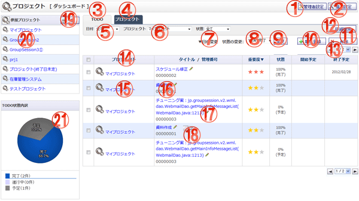

TODOの一覧を表示する画面です。

機能説明
管理者設定ボタン管理者設定メニュー画面へ遷移します。 |
個人設定ボタン個人設定メニュー画面へ遷移します。 |
|---|---|
TODOタブTODO一覧を表示します。 |
プロジェクトタブプロジェクト一覧を表示します。 |
日付コンボ一覧に表示するTODOの日付の条件を選択します。 |
プロジェクトコンボ一覧に表示するTODOのプロジェクトの条件を選択します。 |
日付変更リンク日付変更ダイアログが表示され、TODO日付をシフトできます。 |
状態コンボ一覧に表示するTODOの状態の条件を選択します。 |
変更ボタンTODOの状態をコンボボックスで選択し、変更します。 |
新規登録ボタンTODO登録画面へ遷移します。 |
削除ボタンチェックボックスで選択したTODOを一括で削除します。 |
詳細検索ボタンTODO詳細検索画面へ遷移します。 |
ページングコンボ・前頁・次頁ページングコンボで任意のページへ、前頁アイコンクリックで前のページへ、次頁アイコンクリックで次のページへそれぞれ遷移します。 |
ヘッダタイトルクリックによって一覧のソート条件の切り替えを行います。現在ソート条件になっている項目をもう１度クリックすると「昇順」「降順」が切り替わります。 |
プロジェクト名称プロジェクトメイン画面へ遷移します。 |
TODOタイトルTODO参照画面へ遷移します。 |
TODO編集ボタンクリックしたTODOの編集画面に遷移します。 |
コメントボタンTODO参照画面に遷移し、コメント一覧を表示します。 |
一覧ボタンプロジェクト詳細検索画面に遷移します。 |
プロジェクト名称プロジェクトメイン画面へ遷移します。 |
TODO状態内訳TODOの状態をグラフで表示します。オンマウスで内訳を表示します。 |